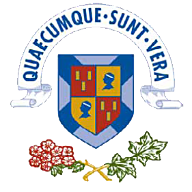

|
Congress Keynotes |
|
Schahram
Dustdar
TU Wien, Austria
Abstract: A
captivating set of hypotheses from the field of
neuroscience suggests that human and animal brain
mechanisms result from few powerful principles. If
proved to be accurate, these assumptions could open
a deep understanding of the way humans and animals
manage to cope with the unpredictability of events
and imagination. Modern distributed systems also
deal with uncertain scenarios, where environments,
infrastructures, and applications are widely
diverse. In the scope of IoT-Edge-Fog-Cloud
computing, leveraging these neuroscience-inspired
principles and mechanisms could aid in building more
flexible solutions able to generalize over different
environments.
Bio: Schahram Dustdar is a Full Professor of Computer
Science at the TU Wien, heading the Research
Division of Distributed Systems, Austria. He holds
several honorary positions: University of California
(USC) Los Angeles; Monash University in Melbourne,
Shanghai University, Macquarie University in Sydney,
University Pompeu Fabra, Barcelona, Spain. From Dec
2016 until Jan 2017 he was a Visiting Professor at
the University of Sevilla, Spain and from January
until June 2017 he was a Visiting Professor at UC
Berkeley, USA.
Kun Yang
University of Essex, UK
Abstract: With 5G
mobile communication systems being commercialized
and deployed worldwide, research into
next-generation communication systems (i.e., 6G) has
started since 2020. Native intelligence is essential
for 6G to deliver its promises of being faster,
greener and smarter. This talk starts with a brief
introduction of 6G mobile communication systems, and
then looks into how computation, and in particular
artificial intelligence (AI) and machine learning
(ML), comes into play in 6G from different
perspectives. The talk firstly looks into how ML is
utilized for data-driven end-to-end communication
system design that revolutionizes the traditional
modular design. Then this talk introduces some
interesting new trends in mobile communication
networks such as semantic communications, digital
twin networks, and ISAC (Integrated Sensing and
Communication), all from the perspective of how
computation plays a role in supporting native
intelligence of modern communication systems.
Bio: Kun Yang received his PhD from the Department of
Electronic & Electrical Engineering of
University College London (UCL), UK. He is currently
a Chair Professor in the School of Computer Science
& Electronic Engineering, University of Essex,
UK, leading the Network Convergence Laboratory
(NCL). He is also an affiliated professor of UESTC.
His main research interests include wireless
networks and communications, future Internet and
edge computing. In particular he is interested in
energy aspects of future communication systems such
as 6G, promoting energy self-sustainability via both
energy efficiency (green communications and
networking) and energy harvesting (wireless
charging). He has managed research projects funded
by UK EPSRC, EU FP7/H2020, and industries. He has
published 400+ papers and filed 20 patents. He
serves on the editorial boards of a number of IEEE
journals (e.g., IEEE ComMag, TNSE, WCL). He is a
Deputy Editor-in-Chief of IET Smart Cities Journal.
He has been a Judge of GSMA GLOMO Award at World
Mobile Congress – Barcelona since 2019. He was a
Distinguished Lecturer of IEEE ComSoc (2020-2021).
He is a Member of Academia Europaea (MAE), a Fellow
of IEEE, a Fellow of IET and a Distinguished Member
of ACM.
Dusit Tao
Niyato
Nanyang Technological University, Singapore
Abstract: The rapid
development of Artificial Intelligence Generated
Content (AIGC) has brought daunting challenges
regarding service latency, security, and
trustworthiness. Recently, researchers presented the
edge AIGC paradigm, which effectively optimizes
service latency by distributing AIGC services to
edge devices. However, AIGC products are still
unprotected and vulnerable to tampering and
plagiarism. Moreover, as a kind of online
non-fungible digital property, the free circulation
of AIGC products is hindered by the lack of
trustworthiness in open networks. In this talk, we
first present an overview of AIGC and its lifecycle,
including content creation, verification,
distribution, and storage. Then, we highlight the
security challenges in AIGC, and for the first time,
we present a blockchain-empowered framework to
manage the lifecycle of edge AIGC products.
Specifically, leveraging fraud proof, we propose a
protocol to protect the ownership and copyright of
AIGC, called Proof-of-AIGC. We then design an
incentive mechanism to guarantee the legitimate and
timely execution of funds-AIGC ownership exchanges
among anonymous users. Furthermore, we present the
design of a blockchain-aided semantic communication
framework for AIGC services to facilitate
interactions between the physical and virtual
domains among service providers and edge devices. We
also design a semantic defense scheme that uses the
blockchain and zero-knowledge proofs to check the
authenticity of semantic data transformations.
Finally, we discuss major research directions of
blockchain in AIGC services.
Bio: Dusit Niyato is currently a President's Chair
Professor in Computer Science and Engineering in the
School of Computer Science and Engineering, Nanyang
Technological University, Singapore. He received
B.E. from King Mongkuk's Institute of Technology
Ladkrabang (KMITL), Thailand in 1999 and Ph.D. in
Electrical and Computer Engineering from the
University of Manitoba, Canada in 2008. Dusit's
research interests are in the areas of distributed
collaborative machine learning, Internet of Things
(IoT), edge intelligent metaverse, mobile and
distributed computing, and wireless networks. Dusit
won the 2011 IEEE Communications Society Fred W.
Ellersick Prize Paper Award and the IEEE Computer
Society Middle Career Researcher Award for
Excellence in Scalable Computing in 2021 and
Distinguished Technical Achievement Recognition
Award of IEEE ComSoc Technical Committee on Green
Communications and Computing 2022. Dusit is serving
as Editor-in-Chief of IEEE Communications Surveys
and Tutorials, an area editor of IEEE Transactions
on Vehicular Technology, editor of IEEE Transactions
on Wireless Communications, associate editor of IEEE
Internet of Things Journal, IEEE Transactions on
Mobile Computing, IEEE Wireless Communications, IEEE
Network, and ACM Computing Surveys. He was a guest
editor of IEEE Journal on Selected Areas on
Communications. He was a Distinguished Lecturer of
the IEEE Communications Society for 2016-2017. He
was named the 2017-2022 highly cited researcher in
computer science. He is a Fellow of IEEE and a
Fellow of IET. |


Organizations:
|  |

|
|---|
Copyright@ Cybermatics 2023. Created and Maintained by Cybermatics 2023 Web Team.